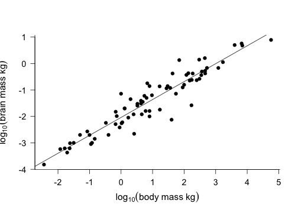
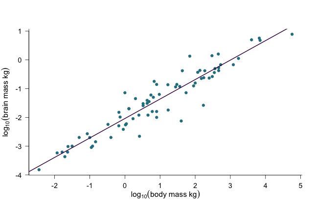
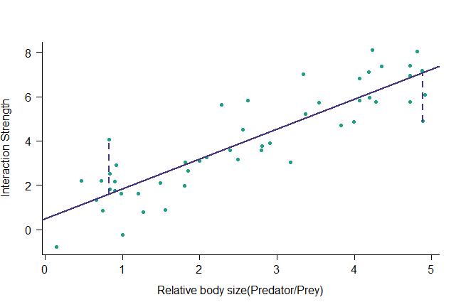
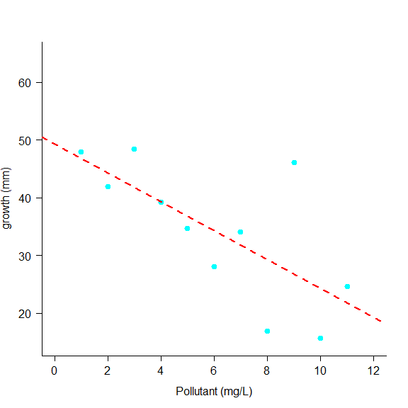

How are two measures related? Are they correlated? Can one explain variation in the other? What is the relationship? Can I make new predictions using the relationship? 
Both x and y data show variation Question is: do they co-vary (vary together)? Are large \(x\) values associated with large \(y\) values? or are large \(x\) values associated with small \(y\) values? Calculate a statistics falle the correlation coefficient (\(r\)) which takes values \(-1 \leq r \leq +1\) test \(r\) against a statistical distribution to get a p-value using cor.test() 
Instead of... Is there a relationship between \(x\) and \(y\) I want to know... What is the relationship between \(x\) and \(y\) Need to fit a line through the data and we can use this to describe what the relationship is, both verbally and mathematically
 Computer fits the line by minimising the residuals off the line Strictly (for least squares fitting), it minimises the sum of the squares of the residuals \(\sum (y_i - \hat{y_i}) ^ 2\)
tells us which data are larger than predicted, and which are lower Should ideally be normally distributed around the line Test this with visual plots like histograms or q-q plots Should be evenly spread around the line with no obvious trend
This figure shows how much algal growth occurs in one week in freshwater lakes of varying pollution levels It would be useful for us to know how much pollution affects algal growth It would also be useful if we could make predictions for growth rates in lakes we havent been able to observe such as: pristine unpolluted lakes or lake with exactly 2.2 mg/L pollution. 